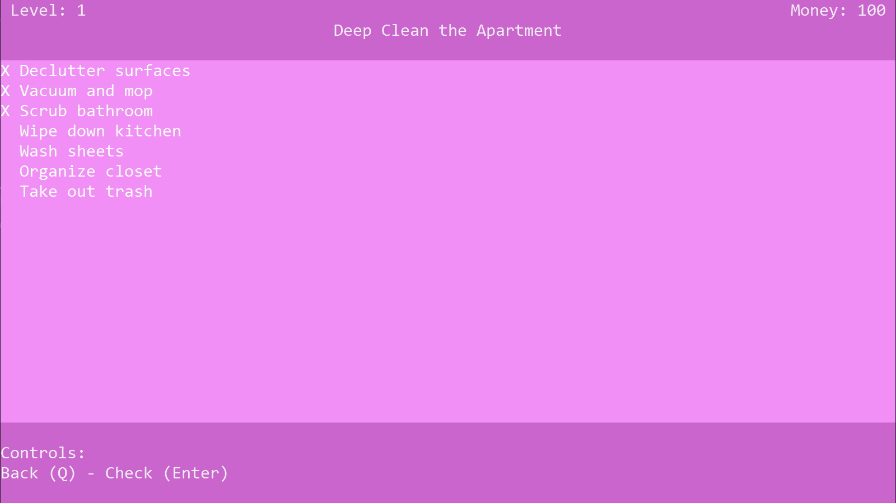
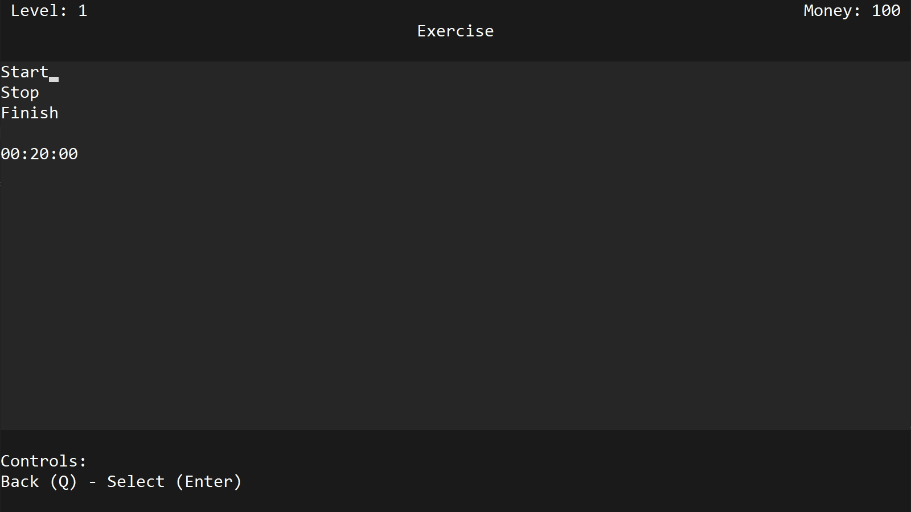
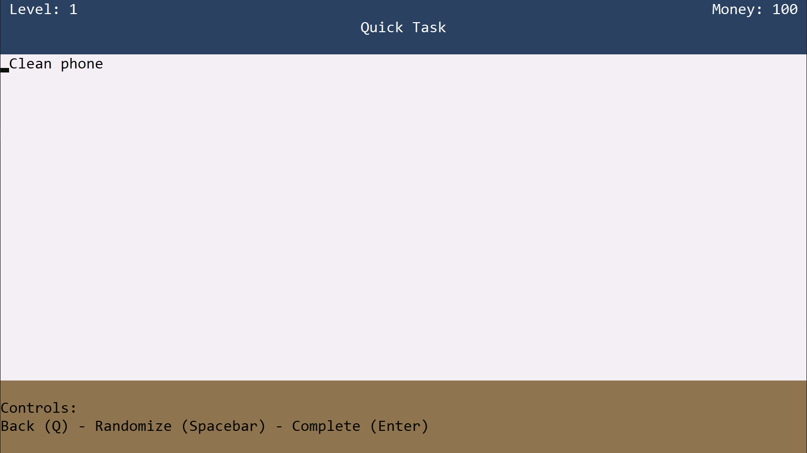
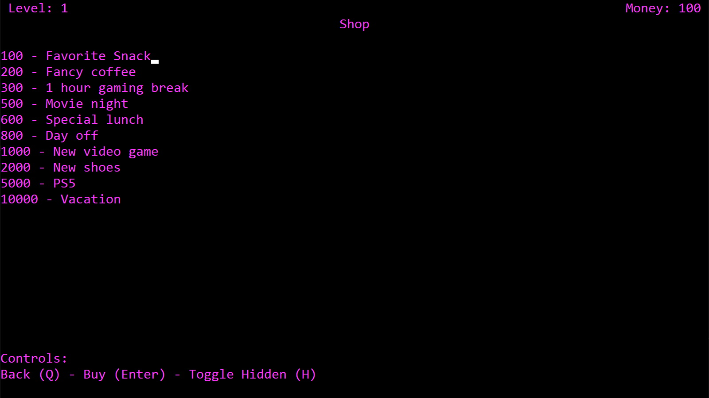
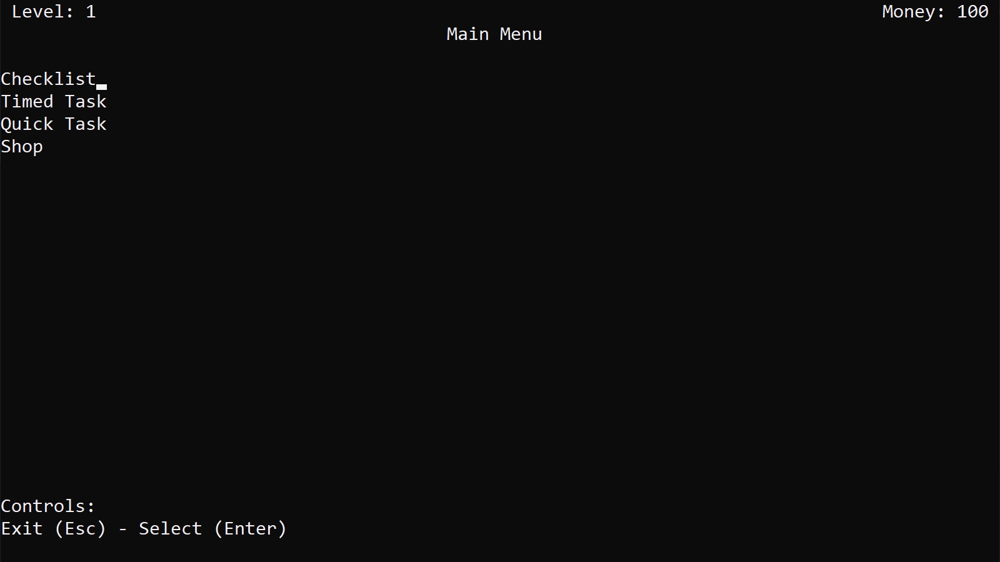

Links
Overview
A gamified terminal application for creating to-do lists. Made with Python.

Features
Checklists
Checklists can be created and modified. Tasks can be checked off as they are finished.
Timed Tasks
Tasks with a set time limit can be created. The timer can be started and stopped, if you need a break.
Quick Tasks
Randomly selects a quick task for you to do. Randomize again until you get one you like.
Gamification
To boost motivation, reward elements were added. Tasks can be completed to earn XP and money, which can be spent in the shop.
Themes
There are multiple color schemes to choose from, to fit personal preference.
Technical Details
This project was made to run in a console or terminal. It was made in Python, using the Curses library for UI control. Data is stored in a SQL database.